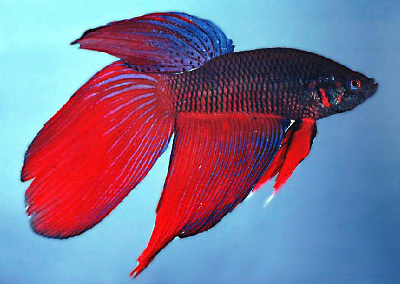
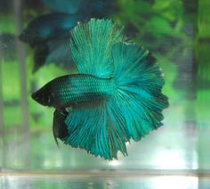

Siamese Fighting Fish
 The Siamese fighting fish (Betta splendens), is a species in the gourami family which is popular as an aquarium fish. They are aggressive towards their own species. These fish have historically been the objects of gambling; two male fish are pitted against each other in a fight and bets are placed on which one will win. One fish is almost always killed as a result. To avoid this, male Siamese fighting fish are best isolated from one another. However, they can be paired with other fish.
 The species is native to the Mekong basin of Laos, Cambodia, Vietnam and Thailand, the latter formerly known as Siam, which is why the fish is called a Siamese Fighting Fish. The fish can be found in standing waters of canals, rice paddies and floodplains. To compensate for the low levels of oxygen in such water, the Siamese Fighting Fish has a lung-like labyrinth organ that allows it to breathe air directly.